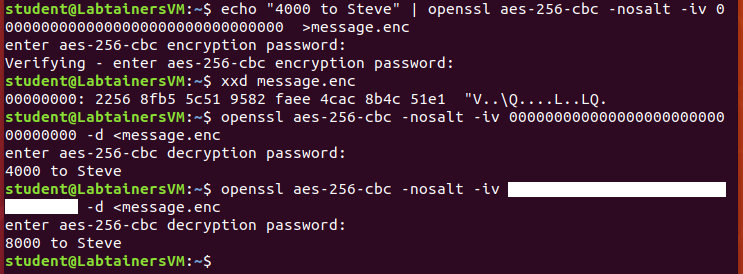

We discussed CBC mode in class with a diagram on the slides, and formulas are given on pages 403–404 in the textbook. For this problem you are to show how CBC mode is malleable — remember from class that “malleable” means that an attacker can tamper with the ciphertext so that when the receiver decrypts the ciphertext there is some predictable change in the plaintext they recover.
When CBC mode is used in practice, the IV is typically sent in the clear immediately preceding the ciphertext, and in an active attack the adversary can tamper with either the IV or the ciphertext. The “openssl” program can be used to do encryptions and decryptions with a given IV, and the following screenshot illustrates such an attack. Notice that a message (“4000 to Steve”) is first encrypted using AES with a 256-bit key in CBC mode, but an IV of all zeros (unfortunately a common mistake of programmers who forget to pick a random IV!). Then there’s a straight decrypt of that message with the correct IV, showing the original message being recovered. But then the final command shows a second decryption (with a hidden IV) that now says “8000 to Steve”. That’s a malleability attack!

Explain how this attack works – use the CBC formulas to show how an attacker that knows the first character of the plaintext can modify the IV so that the receiver’s decryption will start with any character of the attacker’s choice. Don’t assume an IV of all zeroes, like in my example – you should describe a general attack, that would work with any plaintext and any IV. Justify that this works using properties of exclusive-or (XOR). For instance, we know that XOR is associative (so \((x\oplus y)\oplus z=x\oplus (y\oplus z)\)), commutative (so \(x\oplus y=y\oplus x\)), zero is the identity element (so \(x\oplus 0=x\)), and every element is its own inverse (so \(x\oplus x=0\)).
Given this attack, what was the hidden IV used in the example/screenshot above?
Joe Crypto always loved playing the “guess which hand is holding a prize” game, so proposes the following guessing game: You can give him two files, containing whatever data you want them to contain, but with the restriction that they must be the same length. He will then pick one of them, encrypt it with a secret key, and then give you the resulting ciphertext. You have to guess which file he encrypted! Joe’s crypto knowledge isn’t so great, however, and he uses AES in ECB mode. How can you play this game so that you can always win? Be very specific, including a clear explanation of why your strategy allows you to win. (Hint: What is the main weakness of ECB mode, and how can you create a file that displays this weakness?)
The previous question was really about the IND-CPA (in)security of ECB mode, and if you did this correctly it is an informal answer to “Question 4” in the “Formal Models for Cryptography” class reading. Restate your game-playing strategy from the previous question as an IND-CPA game adversary (i.e., state this by giving algorithms \(A_1^{\mathcal{E}}(1^\lambda)\) and \(A_2^{\mathcal{E}}(c)\)). Note that a correct solution to the previous problem, when formalized like this, will make no calls to the encryption oracle.
Consider adding a special-purpose chip to a computer (or phone) that internally stores a random 256-bit secret \(k\) in such a way that the secret can only be used as the key for executing HMAC (using SHA-256) in the chip. Specifically, all the user can do is send a bitstring \(x\) to the hardware so that it computes and returns HMAC(\(k,x\)), and there is no way to extract the key \(k\). Consider a system that uses this hardware to create a 256-bit key for AES for data storage (storage is a separate device, like an SSD card, that can be removed from the system): The user supplies a (possibly low-entropy) password or PIN as \(x\), and then the hardware-computed HMAC(\(k,x\)) is used as an AES key to encrypt and decrypt all data stored on the storage device. We can quickly test whether the hardware gives the correct key by attempting a decryption using it, and assume that the chip has some way of detecting whether the \(x\) value produced the correct decryption key. For this problem, assume that HMAC with SHA-256 satisfies the following property: Without knowing the key \(k\), no information about the value HMAC(\(k,x\)) can be predicted. The only way to get this value is to ask the chip to compute it for you, or to get lucky and guess the output.
What if the storage device is removed from the system and then stolen or sold? In addition to having the encrypted data, the attacker knows the algorithm that the chip uses and knows that \(x\) is some unknown 4-digit PIN, but doesn’t have access to the security chip. How secure is this? Reason about the “best possible attack,” and give some indication of how much time this would take. Informal reasoning is OK, but make sure the logic of your reasoning is clear!
If the entire device (the security chip and the storage device) is captured, so that the attacker can access the HMAC-computing hardware device, what is the best attack in this case? How much time would this take (state any assumptions you need to make about the speed of the hardware device, etc.).
What if the HMAC hardware permanently deletes \(k\) when there have been 8 “bad guesses” for \(x\) in a row? You are again in the scenario of part (b), where the attacker has access to both the chip and the storage device. How does this bad-guess-limiting feature affect the possible attacks?
Consider two users on a Unix system, alice and bob. Both are members of the group develop. There is another user on the system, charlie, who is not a member of the developer group. Consider the following files in a directory that all users can access:
-r--r----- 1 alice develop 3612 Oct 25 14:36 Makefile
-rwxrwxr-x 1 alice develop 4823 Oct 27 11:04 execute
-rw-rw-r-- 1 alice alice 2145 Oct 27 11:31 notes.txt
-rw-rw-r-- 1 bob develop 1098 Oct 26 21:56 source.c
-rw------- 1 alice develop 2796 Oct 27 11:03 source.o
-rwsrwxr-x 1 alice develop 4823 Oct 27 11:12 specialFor each question below, give a very brief explanation of your answer.
Which files can alice modify?
Which files can bob modify?
Which files can charlie read?
Which files can charlie modify?
Programs named execute and special are the exact same program, but are two copies with different permissions. This program tries to open and modify the notes.txt file. If bob runs the version named execute, will the program be able to perform these operations?
If bob runs the version named special, will the program be able to perform these operations?
If execute and special perform differently for bob, why?
Complete the “pass-crack” labtainer exercise, including the lab report and spreadsheet (which are submitted as part of the labtainer ZIP file – there’s nothing to submit as part of the written problems).